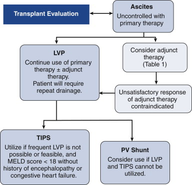

| >= 1.1g/dL |
<=1.1g/dL |
| Cirrhosis |
Peritoneal carcinomatosis |
| Alcoholic hepatitis |
TB peritonitis |
| Cardiac ascites |
Pancreatic ascites |
| Massive liver mets |
Biliary ascites |
| Fulminant hepatic failure |
Nephrotic syndrome |
| Budd-Chiari |
Post-op lymph leak |
| Portal vein thrombosis |
Serositis in CT disorders |
| Myxoedema |
